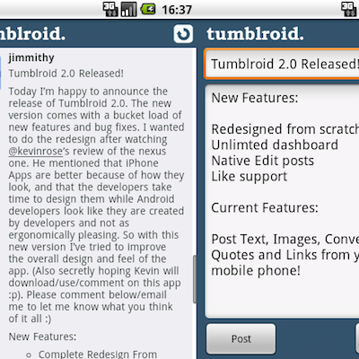

<section id="content">
        <div class="fullitem">
            <div class="promo">
                
            </div>
            <div id="details">
                <p>
                    <a class="title" href="tumblroid.html">Tumblroid</a>
                </p>
                <p>
                    Tumblroid was one of the first Tumblr apps on android
                </p>
                <p>
                    Before they released their own client, tumblroid was the number one tumblr application on the android market. Available in a full paid version and a free lite version, it has achieved over 60 thousand downloads. Tumblroid was also used as part of a marketing campaign when LG launched their Optimus phone.
                </p>
            </div>
        </div>
    </section>
